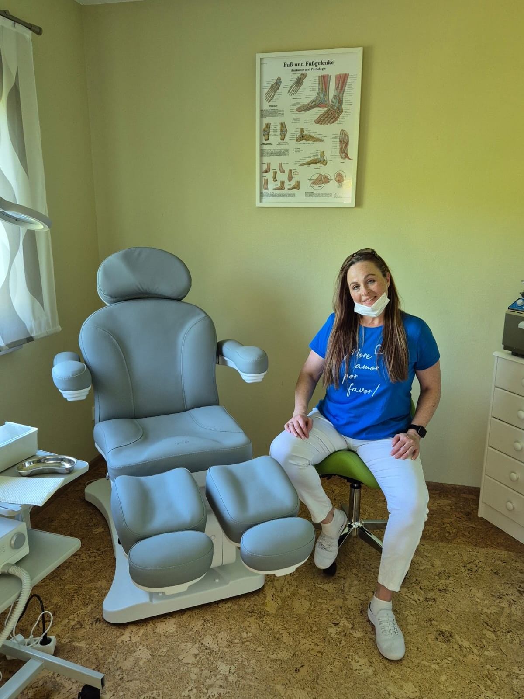
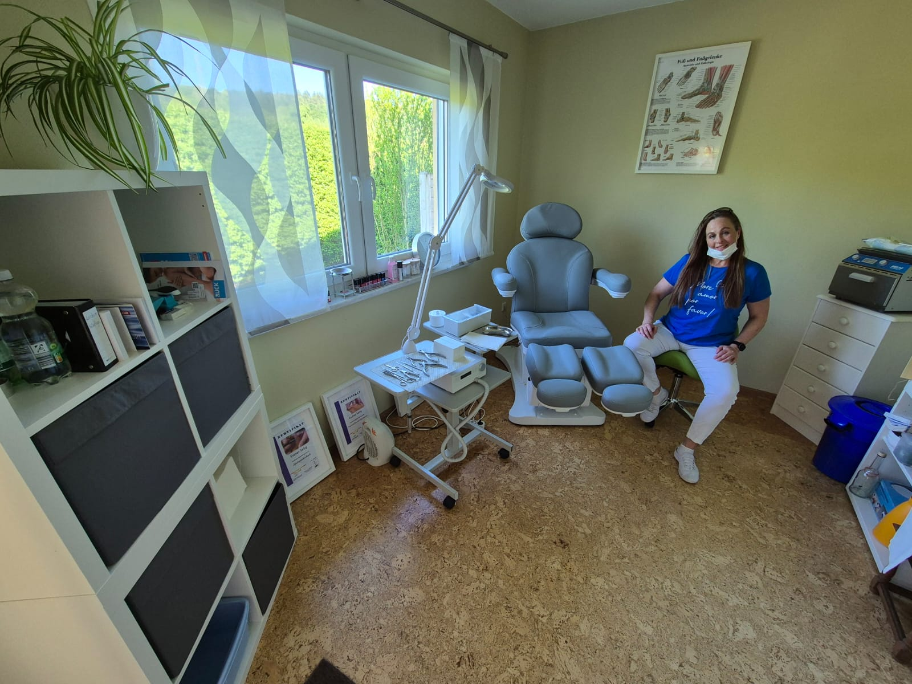

Zusätzliche Option: Fussenthaarung - 5 Euro
Fusszeit am Bodensee - Esther Selig
Walter-Eberhard-Loch-Str. 10
88682 Salem
Telefon: 0155 60 590081
Whatsapp: 0155 60 590081
Termine nach Vereinbarung per Whatsapp und Telefon
Ich freue mich auf deinen Anruf !


Hallo,
ich bin Esther Selig, deine professionelle Fachfußpflegerin in Salem am Bodensee. Mit
meiner Leidenschaft
für gesunde und gepflegte Füße biete ich dir eine umfassende Fußpflege, die auf deine individuellen
Bedürfnisse
abgestimmt sind.
Was macht eine Fachfußpflegerin ? Eine Fachfußpflegerin ist eine qualifizierte Fachkraft, die sich auf die pflegerische und vorbeugende Behandlung spezialisiert hat. Sie arbeitet nicht medizinisch-therapeutisch (das ist den Podologen vorbehalten), sondern sorgt durch Pflege, Hygiene und Beratung dafür, dass Füße gesund bleiben und Fußprobleme gar nicht erst entstehen.
Ich unterstütze dich bei der Erhaltung deiner Fussgesundheit und deines Wohlbefindens
Ich freue mich auf dich.
Deine Esther
Foto
Angaben gemäß § 5 DDG (Digitale-Dienste-Gesetz) und § 18 MStV (Medienstaatsvertrag):
Esther Selig
Walter-Eberhard-Loch-Str. 10
88682 Salem
Telefon: 0155 60 590081
Inhaberin: Esther Selig
Termine immer nur nach Absprache
Verantwortlich für den Inhalt nach § 18 Abs. 2 MStV:
Esther Selig, Walter-Eberhard-Loch-Straße 10, 88682 Salem-Neufrach
Alle auf dieser Internetseiten verwendeten Bildquellen sind urheberrechtlich geschützt und dürfen nicht ohne
Zustimmung oder Lizenzrecht anderweitig verwendet werden. Bildquelle extern : freepik